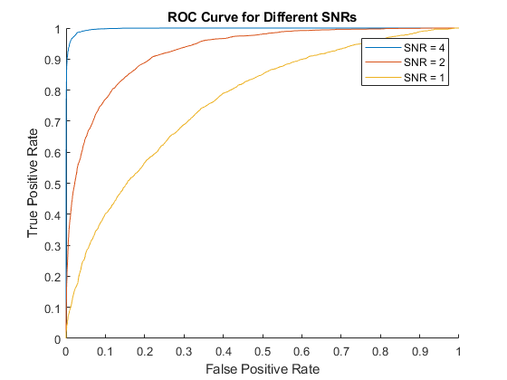
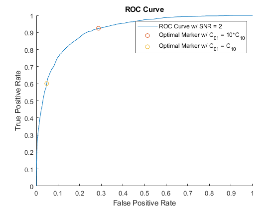
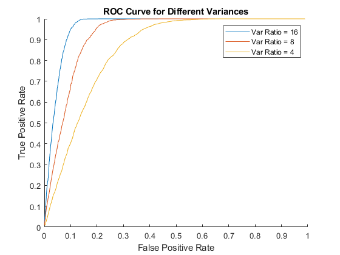
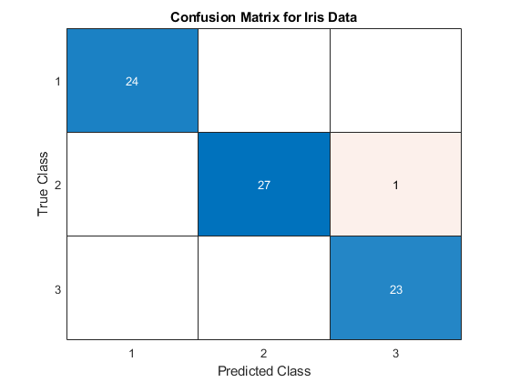

Contents
clear;
clc;
close all;
Question 1: Detection Algorithm
fprintf('Theoretical Decision Boundary for Part A = 1.693. For any samples greater than this value the target will be predicted to be present.\n')
fprintf('Theoretical Probability of Error for Part A = .112 \n\n')
A = 2;
Z = 0;
var = 1;
probWithout = .8;
decisionRegion = findDecisionRegion(Z, var, A, var, probWithout, 1);
fprintf('Experimental Decision Region for Part A = %f. For any samples greater than this value the target will be predicted to be present.\n', decisionRegion)
error = experimentalProbError(Z, var, A, var, probWithout, decisionRegion);
fprintf('Experimental Probability of Error for Part A = %f \n', error)
[falsePos1, truePos1] = ROCcurve(Z, .5*var, A, .5*var, probWithout, 0);
[falsePos2, truePos2] = ROCcurve(Z, var, A, var, probWithout, 0);
[falsePos3, truePos3] = ROCcurve(Z, 2*var, A, 2*var, probWithout, 0);
figure(1)
hold on;
plot(falsePos1, truePos1)
plot(falsePos2, truePos2)
plot(falsePos3, truePos3)
legend('SNR = 4', 'SNR = 2', 'SNR = 1')
xlabel("False Positive Rate")
ylabel("True Positive Rate")
title("ROC Curve for Different SNRs")
decisionRegionC = findDecisionRegion(Z, var, A, var, probWithout, 10);
[falsePosC, truePosC, specificSampleCoord] = ROCcurve(Z, var, A, var, probWithout, [decisionRegionC, decisionRegion]);
figure(2)
hold on;
plot(falsePosC, truePosC)
plot(specificSampleCoord(1,1), specificSampleCoord(1,2), 'o')
plot(specificSampleCoord(2,1), specificSampleCoord(2,2), 'o')
xlabel("False Positive Rate")
ylabel("True Positive Rate")
title("ROC Curve")
legend("ROC Curve w/ SNR = 2", "Optimal Marker w/ C_{01} = 10*C_{10}", "Optimal Marker w/ C_{01} = C_{10}")
fprintf('\n***************************\n\n')
fprintf('Theoretical Decision Region for Part E = -1.187 to 1.187. For any samples in this region the target will be predicted to be present. \n')
fprintf('Theoretical Probability of Error for Part E = .1414 \n\n')
Ae = 0;
varWithout = 8;
varTarget = 1;
probWithoute = .8;
decisionRegionE = findDecisionRegionE(Ae, varWithout, varTarget, probWithoute);
fprintf('Experimental Decision Region for Part E = %f to %f. For any samples in this region the target will be predicted to be present.\n', decisionRegionE(1), decisionRegionE(2))
errorE = experimentalProbErrorE(Ae, varWithout, varTarget, probWithoute, decisionRegionE);
fprintf('Experimental Probability of Error for Part E = %f \n', errorE)
[falsePosE1, truePosE1] = ROCcurveE(Ae, 16, 1, probWithoute);
[falsePosE2, truePosE2] = ROCcurveE(Ae, 8, 1, probWithoute);
[falsePosE3, truePosE3] = ROCcurveE(Ae, 4, 1, probWithoute);
figure(3)
hold on;
plot(falsePosE1, truePosE1)
plot(falsePosE2, truePosE2)
plot(falsePosE3, truePosE3)
legend('Var Ratio = 16', 'Var Ratio = 8', 'Var Ratio = 4')
xlabel("False Positive Rate")
ylabel("True Positive Rate")
title("ROC Curve for Different Variances")
hold off;
Theoretical Decision Boundary for Part A = 1.693. For any samples greater than this value the target will be predicted to be present.
Theoretical Probability of Error for Part A = .112
  
Question 2:
load('Iris.mat');
dimOfData = size(features);
samples = dimOfData(1);
uniqueLabels = length(unique(labels));
halfSamples = samples/2;
shuffling = transpose(randperm(samples));
training = shuffling(1:halfSamples);
testing = shuffling(halfSamples+1:samples);
trainFeatures = features(training, :);
trainLabels = labels(training, :);
testFeatures = features(testing, :);
testLabels = labels(testing, :);
featuresForOne = trainFeatures((trainLabels == 1),:);
featuresForTwo = trainFeatures((trainLabels == 2),:);
featuresForThree = trainFeatures((trainLabels == 3),:);
meanOne = mean(featuresForOne);
meanTwo = mean(featuresForTwo);
meanThree = mean(featuresForThree);
covOne = cov(featuresForOne);
covTwo = cov(featuresForTwo);
covThree = cov(featuresForThree);
bayesianPriors = histcounts(testLabels) / length(testLabels);
probOfEach = zeros([halfSamples, uniqueLabels]);
probOfEach(:,1) = mvnpdf(testFeatures, meanOne, covOne) * bayesianPriors(1);
probOfEach(:,2) = mvnpdf(testFeatures, meanTwo, covTwo) * bayesianPriors(2);
probOfEach(:,3) = mvnpdf(testFeatures, meanThree, covThree) * bayesianPriors(3);
[maximum, columnIndex] = max(probOfEach, [], 2);
errorProb = 1 - mean(columnIndex == testLabels);
fprintf("\nThe Probability of Classification Error: %f", errorProb);
figure(4);
confusionchart(confusionmat(columnIndex, testLabels));
title('Confusion Matrix for Iris Data');
The Probability of Classification Error: 0.013333

Functions for Question 1
function decisionRegion = findDecisionRegion(mu0, var0, mu1, var1, probWithout, costMiss)
spacing = 10000;
x = linspace(-10, 10, spacing);
probWith = 1 - probWithout;
yWithoutDetection = normpdf(x, mu0, var0)*probWithout;
yWithDetection = normpdf(x, mu1, var1)*probWith*costMiss;
for i = 1:spacing
if (yWithoutDetection(i) <= yWithDetection(i))
decisionRegion = x(i);
break;
end
end
end
function error = experimentalProbError(mu0, var0, mu1, var1, probWithout, decisionRegion)
totalSamples = 100000;
nonTargetSamples = normrnd(mu0, var0, [1, round(probWithout*totalSamples)]);
targetSamples = normrnd(mu1, var1, [1, round((1-probWithout)*totalSamples)]);
error = 1 - ((length(targetSamples(targetSamples > decisionRegion)) + length(nonTargetSamples(nonTargetSamples < decisionRegion))) / totalSamples);
end
function [falsePositiveRate, truePositiveRate, specificSampleCoord] = ROCcurve(mu0, var0, mu1, var1, probWithout, decisionRegion)
totalSamples = 10000;
spacing = 1000;
x = linspace(-10, 10, spacing);
falsePositiveRate = zeros([1, 100]);
truePositiveRate = zeros([1, 100]);
specificSampleCoord = zeros([length(decisionRegion), 2]);
nonTargetSamples = normrnd(mu0, var0, [1, round(probWithout*totalSamples)]);
targetSamples = normrnd(mu1, var1, [1, round((1-probWithout)*totalSamples)]);
for i = 1:spacing
falsePositiveRate(i) = length(nonTargetSamples(nonTargetSamples > x(i)))/ (round(probWithout*totalSamples));
truePositiveRate(i) = length(targetSamples(targetSamples > x(i))) / (round((1-probWithout)*totalSamples));
end
for i = 1:length(decisionRegion)
specificSampleCoord(i, 1) = length(nonTargetSamples(nonTargetSamples > decisionRegion(i)))/ (round(probWithout*totalSamples));
specificSampleCoord(i, 2) = length(targetSamples(targetSamples > decisionRegion(i))) / (round((1-probWithout)*totalSamples));
end
end
function decisionRegion = findDecisionRegionE(mu0, var0, var1, probWithout)
spacing = 10000;
x = linspace(-10, 10, spacing);
probWith = 1 - probWithout;
yWithoutDetection = normpdf(x, mu0, var0)*probWithout;
yWithDetection = normpdf(x, mu0, var1)*probWith;
decisionRegion = zeros([1,2]);
for i = 1:spacing
if (yWithoutDetection(i) <= yWithDetection(i))
decisionRegion(2) = x(i);
end
if (yWithoutDetection(spacing + 1 - i) <= yWithDetection(spacing + 1 - i))
decisionRegion(1) = x(spacing + 1 - i);
end
end
end
function error = experimentalProbErrorE(mu0, var0, var1, probWithout, decisionRegion)
totalSamples = 100000;
nonTargetSamples = normrnd(mu0, var0, [1, round(probWithout*totalSamples)]);
targetSamples = normrnd(mu0, var1, [1, round((1-probWithout)*totalSamples)]);
error = (length(nonTargetSamples((nonTargetSamples < decisionRegion(2)) & (nonTargetSamples > decisionRegion(1)))) + length((targetSamples(targetSamples > decisionRegion(2)))) + length((targetSamples(targetSamples < decisionRegion(1))))) / totalSamples;
end
function [falsePositiveRate, truePositiveRate] = ROCcurveE(mu0, var0, var1, probWithout)
totalSamples = 10000;
spacing = 1000;
x = linspace(-10, 10, spacing);
falsePositiveRate = zeros([1, 100]);
truePositiveRate = zeros([1, 100]);
nonTargetSamples = normrnd(mu0, var0, [1, round(probWithout*totalSamples)]);
targetSamples = normrnd(mu0, var1, [1, round((1-probWithout)*totalSamples)]);
for i = 1:spacing
falsePositiveRate(i) = length(nonTargetSamples(abs(nonTargetSamples) < abs(x(i))))/ (round(probWithout*totalSamples));
truePositiveRate(i) = length(targetSamples(abs(targetSamples) < abs(x(i)))) / (round((1-probWithout)*totalSamples));
end
end
Experimental Decision Region for Part A = 1.693169. For any samples greater than this value the target will be predicted to be present.
Experimental Probability of Error for Part A = 0.111490
***************************
Theoretical Decision Region for Part E = -1.187 to 1.187. For any samples in this region the target will be predicted to be present.
Theoretical Probability of Error for Part E = .1414
Experimental Decision Region for Part E = -1.185119 to 1.185119. For any samples in this region the target will be predicted to be present.
Experimental Probability of Error for Part E = 0.139210